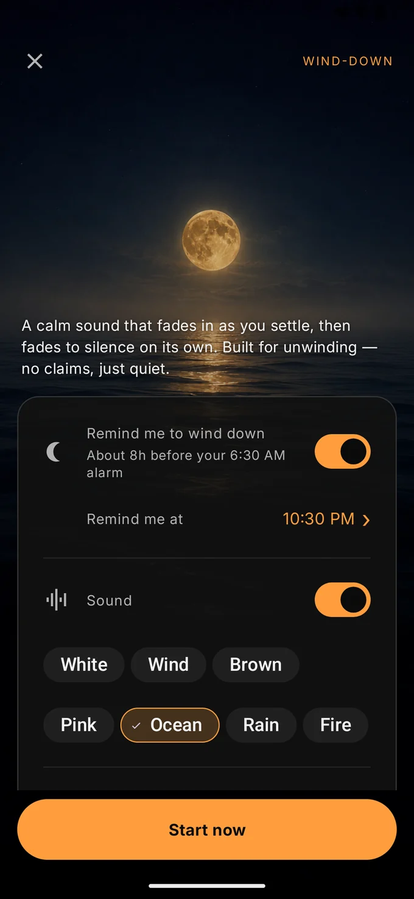
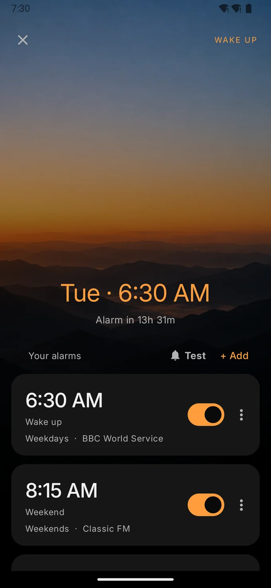
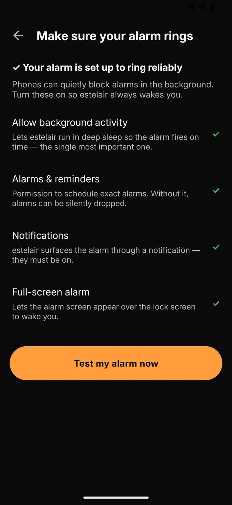
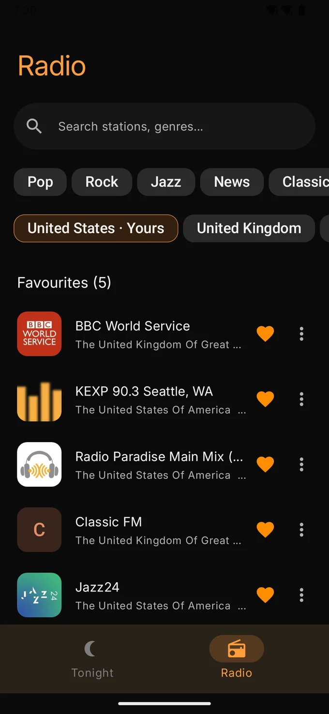
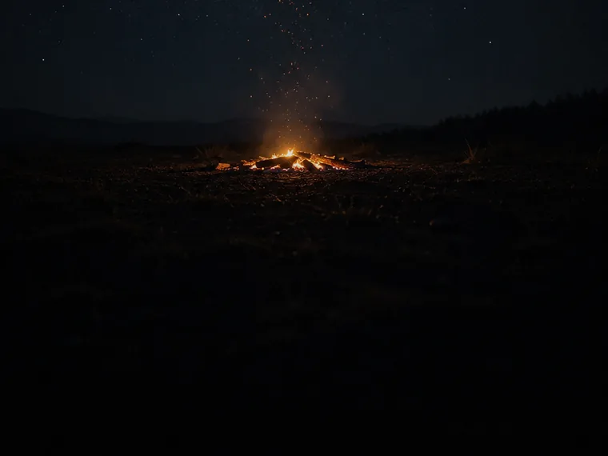

1 Go to sleep
Calm sound that never repeats.
Every sound is generated as it plays, so there is no loop to notice and nothing to download. Ocean, rain, wind, fire, and the classic noise colours.
- It fades in as you settle, and fades to silence on its own — so it can't wake you later.
- A soft chime as it begins, and an optional wordless breathing guide (Plus).
- A nightly reminder, at a time you choose, when it's time to start.
- Dim & settle quiets the screen down to just a still night scene.
- Two sounds are free, forever — white noise and a full wind ambience.

2 Wake up
Radio, not a jarring beep.
Wake to your morning show, your music or your local news — any of 30,000+ stations. If a stream ever drops, your phone's own alarm tone takes over.
- The volume rises slowly, so you surface naturally.
- Snooze with a volume-button press or a tap — from the alarm screen or straight from the notification. Choose how many snoozes, and how long.
- A heads-up 15 minutes before lets you skip the alarm if you're already awake.
- As many alarms as you like, for whichever days you like.
- Built to actually fire: exact-time alarms that survive reboots and time changes, with plain guidance for phones that like to kill background apps.

The part nobody thinks about until it fails
An alarm you can actually trust.
Phones quietly throttle apps in the background, and most alarm apps just hope for the best. estelair checks the four settings that decide whether you wake up, tells you which are off, and takes you straight to each one.
- Background activity — so the alarm still fires while the phone is in deep sleep. The single most important one.
- Alarms & reminders — the exact-time permission. Without it, alarms can be dropped silently.
- Notifications and the full-screen alarm — so it reaches you over the lock screen.
- "Test my alarm now" — prove it works tonight, rather than finding out on the morning it matters.

And a real radio
Worth opening in the daytime.
The station browser isn't an afterthought bolted to an alarm — it's the other half of the app.
- Browse and search thousands of stations, see what's local, keep your favourites.
- The song that's playing now, with full lock-screen and headphone controls.
- A sleep timer plays a station for a while, then fades out and stops.

The rest of the sound engine.
One payment, once — never a subscription. Plus opens five more sounds, three more night scenes, a tone you can set to your own pitch, and the breathing guide.
Ocean
A slow sea, with the backwash drawing over shingle.
Rain
Surface taps that drift, never settling into a pattern.

Fire
A dark flame bed with sparse, distinct crackles.
Brown & pink noise
The deeper, softer noise colours — warmer than white, and levelled to match every other bed.
A pure tone
A steady tone under the sound bed, or playing on its own. Seven pitches, each named for how it sounds rather than what it is.
130 deep · 174 soft · 285 warm · 396 round 417 gentle · 432 mellow · 528 clearBinaural option
A small offset between the two ears, riding on the tone. We make no claims for it — it's there if you like how it sounds. Headphones needed.
Drift 2 Hz · Calm 4 Hz · Float 6 Hz| Free | Plus | |
|---|---|---|
| Wind-down sounds | White noise, wind | + ocean, rain, fire, brown, pink |
| Night scenes | Yes | + a scene of its own for ocean, rain and fire |
| A pure tone, at a pitch you choose | — | ✓ 130 · 174 · 285 · 396 · 417 · 432 · 528 Hz |
| Binaural option (headphones) | — | ✓ 2, 4 or 6 Hz between the ears |
| Wordless breathing guide (two styles) | — | ✓ |
| Fade in and out, dim & settle, the nightly reminder | ✓ | ✓ |
| Every alarm feature, and the whole radio | ✓ | ✓ |
One payment, once. Never a subscription, and the alarm is never behind it.
Private by design.
Not a setting you have to find. It's how the app is built.
It stays on your phone
Your alarms, stations and settings never leave the device. Uninstall and they're gone.
Nothing to sign in to
No account, no profile, no ads, no usage tracking, and no advertising ID.
Online only when it must be
estelair connects to find and play radio, and to send an anonymous crash report so bugs get fixed.
Set two things. Sleep better tonight.
A softer start in the morning, a quieter finish at night.
Android 10 and later. Free to install.